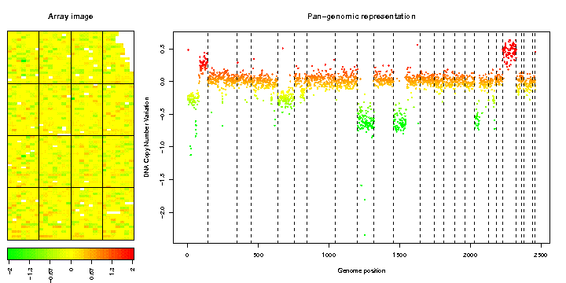

| Profile after normalization: 2372 clones (96%) | ||||
| "> |
| Flag label | Flag code | Parameter | Flagged spots | Flagged spots(%) |
|---|---|---|---|---|
| Local bias | S | - | 88 | 1 |
| Negative spot correlation | C | - | 0 | 0 |
| Low signal to noise ratio (Ref) | B | 1.25 | 19 | 0 |
| Low signal to noise ratio (Dapi) | D | 1.25 | 85 | 1 |
| Poor replicate consistency | E | 0.1 | 0 | 0 |
| Singlet | U | - | 15 | 0 |
| not flagged | OK | - | 7185 | 97 |
| Label | Value |
|---|---|
| Local signal variability along the genome | 0.021 |
| Average variability among replicates | 0.011 |
| Dynamics of the DNA copy number variation | 0.399 |